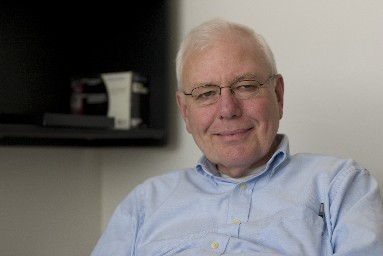
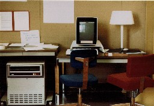

|  Chuck Thacker in his office, October 2006 |
Chuck Thacker is one of the 16 technical fellows of Microsoft – the highest technical position one can achieve among the 75000+ employees of Microsoft. He has been one of the main designers and builders of the Xerox Alto, the first personal computer, in 1972, and one of the inventors of the Ethernet. At Microsoft he led the creation of the Tablet PC prototype.
This interview was conducted in mid-October 2006. The audio transcript has been edited for continuity. I thank my colleagues who have reviewed the transcript and have made useful suggestions. Chuck Thacker has reviewed this text prior to posting. |
This interview is licensed under a Creative Commons Attribution License.
| 
Image courtesy of Chuck Thacker. |
Q: My first question is somewhat tongue-in-cheek. The Alto computer was designed and built at Xerox PARC in 1972. It featured a lot of very advanced technologies: microprogramming, a mouse, bitblt (high-speed screen manipulations), a bitmapped display, overlapping windows, menus, icons, wysiwyg text editing, object-oriented programming, simultaneous applications, Ethernet networking, CAD systems, email, and laser printing, many of the things we take for granted today, more than 30 years ago. So, my question is: What has happened in the last 30 years that wasn’t discovered at PARC? |
A: We did miss a lot of things. We missed the IBM PC. And in particular, we missed the significance of the Apple II. I had looked at an Apple II. The Apple II came out about 10 years after the Alto. But it was a very minimalist design, so it would not cost a lot of money. Alto was very expensive: it cost $12,000 in 1973, that’s now $100,000. The idea of putting $100,000 of stuff on someone’s desk just didn’t work. And although Alto went to a lot of places, including the Carter White House, for document preparation, for most things it was really too expensive, it was just before its time. And the reason IBM PC and Apple were so successful is that people had begun to make microprocessors which were powerful enough to run real software. It’s a little humorous, the processor in the Apple II, the 6502, was the processor that we used in the keyboard of the Dorado [a successor of Alto], that we built at about the same time — our keyboard controller. We didn’t think of the 6502 as a computer at all, we thought of it as a controller.
We missed spreadsheets, but only by a little. Peter Deutsch had written a memo about a programming system that would work with a concept called spiders under the paper, which is the spreadsheet paradigm, but he never built it. And the primary reason he never built it is that he didn’t have anybody who needed it.
One of the things that worked out so well with the Alto is that we built it for ourselves. You can’t do that today, because what nerds want is not what the public wants. But we wanted a lot of things that people did want at that time. In particular: document preparation.
We missed RISC. That’s primarily because every machine we had built was microprogrammed. [Microprograms] would allow you to build quite complex instruction sets. In the Alto and in some of the other machines the microprocessor was used for doing I/O control as well. You could do very efficient things with microprograms. You could do things like bitblt, which are very difficult with a hardwired machine. We missed RISC until we read their papers: What a good idea!
We missed Unix. The Alto system was a single-user machine, it was not a time-sharing system. Unix started out as a multi-user system, to allow multiple users to share a PDP-11. [Note: it was actually PDP-7.] We missed that one completely.
TCP/IP is questionable. Some of the people from PARC did participate in the meetings with the TCP/IP group, but the lawyers told them they could not say anything. They could only ask questions, so they asked clarifying questions. I was told that one of the organizers turned towards the Xerox guys and said: You guys have done this before, haven’t you? Xerox had its own network protocols — XNS. That was at a time when there were a zillion protocols. TCP/IP hadn’t really emerged as the dominant one.
Q: Why did you decide to work in computers?
A: I didn’t start in computing at all. I had known for a long time, since I was kid, as a matter of fact, that I wanted to be an engineer. I decided when I was nine to become a physicist. But I would not become a theoretician, because I am a pretty bad mathematician. Instead I would become an experimentalist, and in particular, I was to design particle accelerators. I had worked at the Caltech synchrotron laboratory for a while which had one of the first medium-sized particle accelerators — it was actually a prototype for the Berkeley Bevatron. And I really liked it a lot. You are doing physics, and you are doing cutting-edge engineering, because there is a lot of very hard engineering in building stuff for an accelerator.
I bounced around through various schools. Caltech, UCLA, and finally Berkeley, where I was in physics. I was pretty much self-supporting through undergraduate school. Student loans were not a concept then. When I graduated I said I am going to work for a year or so, to get enough money to pay for graduate school, and I will apply to various graduate schools along the way.
One day a friend came by and said: You know, Chuck, there’s an opening at Berkeley in the Genie Project. So I went and talked to the guy who managed the project — Mel Pirtle, and wound up working for them as a staff engineer. This was in 1968. What Genie had just finished was the 940 time-sharing system. They were augmenting it in various ways. I worked on various pieces, such as the printer controller, some modems, redoing the teletype channels.
Of course, I got totally sucked into computers. I had programmed a bit before, mostly in FORTRAN, for physics. The way I put it, I fell among bad companions: Pirtle, Wayne Lichtenberger, Butler Lampson, Peter Deutsch, a lot of very good people.
We decided we could not do the follow-on machine, which was very large, in a university. Although we probably could get ARPA to pay for it — because at that time ARPA was a big spender, since Bob Taylor was running ARPA — the strictures of the university system would just not let us build something at that scale.
So we went to do a start-up, called Berkeley Computer Corporation (BCC). And we spent through 1970 building the machine. There was only one built, because the company could not get enough financing to make a big success out of it. But the final machine worked, and the company was dissolved. And the machine was sold to the University of Hawaii where it was the primary machine of the Computer Science Department for about 5 years. A lot of people went to this new research laboratory in Palo Alto, called PARC. I was actually one of the very first, because the hardware was working, so I didn’t have anything to do at BCC while the software people were finishing up the software. So I went to work for PARC.
Q: You took advantage of Moore’s law even very early. For example, in the Alto you dedicated 3/4 of memory to the bitmapped display, although it was very expensive. However, can you point out some instances where Moore’s law enabled some capabilities which took you by surprise?
A: One of the things I did not anticipate very well was how far one could push CMOS technology. CMOS was great, it was much better than the original technology, which only had one kind of transistor, an n-channel transistor. Until 1990 I thought that other technologies, like Bipolar, or transistors made from materials like [atomic group] 3-5 oddball compounds, which are fundamentally better than Silicon in terms of performance, would still have a place. And today they don’t. The closest thing you have is Silicon on Germanium as an add-on process to Silicon. But CMOS has conquered the world. I did not anticipate that.
I was a fan of ECL [emitter-coupled] logic much longer than I should have been. If I had really figured it out… I didn’t talk to enough good material scientists or physicists to believe. A lot of the original papers about the limitations [of CMOS], which were written by the masters, like Carver Mead, just turned out to be wrong. They didn’t understand that the high level of investment in CMOS would pay off. I did somethings which were pretty nutty, when viewed even from 20 years after. But by and large, I did internalize Moore’s law.
Most people don’t understand what Moore said. He didn’t say computers will run faster, or they will become cheaper, or anything like that. He said you can put twice as many transistors on this chip every 18 to 24 months. And he was dead-on right. I imagine he’s astonished it has managed to hold on for 35 years, because mostly technology curves are S curves. And there is going to be an S curve in silicon. Things are getting down to atomic dimensions. As they do, other technologies, like electron-spin devices, and carbon-nanotube devices are trying to move from laboratory to reality. Recently Freescale introduced MRAM, which is based on electron spins to store the bits. It is nonvolatile, and very fast. Not big yet, but it may be the replacement for memory in the CMOS area. Nonvolatility would be wonderful: it would take us back where we were with core memory: you can take away the power and the machine does not lose its brain.
Q: Your older projects are quite well known. Can you talk a little about your more recent projects?
A: After coming to Microsoft, I first spent a couple of years in the UK, helping set-up the research laboratory there. That was a finite period assignment, and when I came back to the US I looked around for something to do. I had worked a bit with the guys doing electronic books. They had just gotten the charter to do some kind of tablet device. I went to them and said hire me, because I know how to do this. And they did. So I went into this product group, and I worked on the Tablet PC for a few years.
The Tablet PC hasn’t been as successful as we hoped it would be, but it hasn’t been the commercial failure that all of its predecessors have been. It’s still growing, it’s still a very viable form factor, and a lot of people just love them.
More recently I’ve been thinking about where can we take computers that they have not gone before? The way I characterize this is: Microsoft, in order to be a big growth company, has to do better than 10% market share. People look at me and say: you’re crazy, MS has 90% market share. I say No, you’re wrong, there are about 600M PCs in the world, and there are 6 billion people. By my measure, that’s 10%. I am very interested to make technology more accessible in developing countries.
More recently, I am also interested in getting back into computer architecture. I had left it about a decade ago, because I decided that the papers I was reading were all boring, and were all very incremental. I now believe there may be some ways to break through that and do the major innovations that we were doing 30 years ago. You can’t do those the same way today, because everybody works with the same silicon processes, and that defines what you can build. A small group cannot design a large chip — unless you do it with an industrial partner, because it takes too long, it is too big an effort. Managing the complexity of a billion transistor object is not something that a group of 10 people can do, no matter how wonderful the tools are.
One approach that I am quite enamored of (I didn’t think of it), is RAMP, Research Accelerator for Multiple Processors. Their idea is to use FPGAs to simulate the future. In the same way we used new hardware by spending a lot of money to simulate the future [in a system like Alto]. But we can’t do that any more, because there isn’t that much money [to simulate a next-generation processor]. I think this RAMP device might improve things. I am helping to make RAMP happen more quickly and on ways to use it to redress some of the mistakes we’ve made in the last 30 years in terms of architecture.
Q: What technologies make a Tablet different from a regular laptop?
A: There aren’t any. The intention was that there would not be any, because if you have a lot of novel technologies, it is unlikely you will get widespread adoption, because people will want to charge money for those things, and that is not what leads to volume. The reason the PC is the dominant platform on the planet is because it is a platform, and the specs are sufficiently open that anybody can make one.
The only thing that’s really new in the Tablet PC is the pen digitizer. A lot of people had built tablets with resistive digitizers. You see resistive digitizers in Pocket PCs. But they don’t work very well if the screen is large and if you want to write on the screen. Because if you rest your hand on the screen, it thinks that your hand is the pen. The digitizer that we chose uses an electromagnetic technique which allows it to locate the pen even when it is above the surface of the tablet. This, to many, looks like magic. It is just electronics.
Tablets come in two forms: a convertible and a slate, which I favor, which is just a solid block. To first order, it is a laptop, but it is the evolution of a laptop. That’s the way many manufacturers use it: they take their laptop designs, stick the digitizers on, and they are done. Microsoft built a Tablet PC not because it included a lot of novel technology, but because there was a lot of resistance from [hardware] manufacturers. They looked at the idea, and they didn’t understand it, and they didn’t know how hard it was going to be. We had to build a prototype to show them how hard it was going to be. When that prototype was built, a lot of them said gee, we can build things like that... Sure you could. It’s easy.
Q: The magic is in the software…
A: The software is always the magic in the computer. Hardware is really the simple part. The complex part is the software, and that’s the part that’s hard to get right.
Like anything, the Tablet’s initial software was very weak. It would not track the pen very well, handwriting would not work very well for that reason. But it’s gotten quite a bit better lately. Now it’s possible to build very good drawing and handwriting applications on the Tablet. There’s still a lot of innovation to be done on how to use the pen to improve the user experience, that we haven’t even thought of. Like when we had built the Alto: we hadn’t really quite figured out windowing systems. It took quite a while before we had the windowed applications. The Alto screen looked like a glass teletype initially.
Q: In your office there is always some disemboweled electronic device. You always take things apart. Why do you do that?
A: You learn design tricks. You learn how other people did it. I encourage reverse engineering. A lot of people say: you shouldn’t reverse engineer, you should go out and do new things. I don’t believe that. I take things apart. I take toys apart. It’s very interesting to see how people designed a toy. Somebody said: an engineer can build for a dime what anybody can do for a dollar. Engineering is a matter of making choices in order to minimize a cost function and to maximize the outcome. I study other designs. And I see how smart people did it.
Q: It’s easier to do for hardware than for software.
A: That’s one of the things that is very positive about the open-source movement: anybody can look at the source and see how it is done. The problem in software is that you may look at the code and still can’t figure out how it is done, and a lot of code is junk anyway. And it is much harder to understand a software system than to understand a hardware system. If you can look at it and see it working, you know what it does, whereas you can stare at a program listing, and you don’t know what it does. Many people that I know from the Unix community spent a long time looking through the listings of the first one that they actually published, which I think was System VII. And they actually published everything. And people pored over them to figure out how this extremely clever system was built. These days it’s much harder. Either you can’t get the code, or there’s so much of it, you can’t understand it. No single human can understand it anyway. But you still do a pretty good job understanding things by reading the source.
Q: What do you think is your best work?
A: The best well known is the Alto. But some of the later things were more relevant today. I am pretty proud of the Firefly system, which was the first multiprocessor workstation. A lot of the experience from Firefly should be relevant to the upcoming multicore world. We built the computers, and we built a multithreaded operating system to run on them, that looked like Unix. This was in 1983 to 1985. They were still operating Fireflys when I left DEC [in 1997]. Of course, DEC was in the workstation business by then. Some of those things are still relevant, and still cited in papers. Nobody cites Alto, unless they are history papers. But the early things were much more fun, because the field was certainly much more open at the time.
Q: How do you learn good engineering?
A: You generally learn it by doing it and by looking at what other people have done. I’ve had a few very good mentors throughout my career. I’ve probably learned more from them than from books. Books are good for reference, but you need to have a very large bag of tricks. Just as a programmer needs to understand a lot of fundamental algorithms, or he would go off the rails and reinvent everything, usually to the detriment of the end-user. We see that a lot today: people don’t get good grounding in algorithms, so they go and reinvent them, and they are very proud. But by and large, the old ones are better. So: learn how other people do it.
Q: People have expected many times that technology will miraculously help the learning process, but it hasn’t happened. How can computers help?
A: To some extent it has helped. If you think about the way these days teachers work about presenting ideas to students, a lecture room is much different than it was, even ten years ago. Everyone uses PowerPoint, everyone uses laptops. You can argue whether PowerPoint has increased the quality of education or decreased it, but it has certainly changed it a lot. Computer have had an enormous effect on education. By and large, this is not true at the lower grades. My own belief is that’s where the problem is. I was at a meeting in Boston last week, where we were told about some of the wonderful investigations that people have been doing to improve secondary and college education, primarily through the use of technology. Somebody in the audience said: isn’t K2-6 where the problem really is? The speaker said Yes, it is, but it is too hard. So we’ve not gone there.
People who have gone there have been in general unsuccessful. Edutainment is the name. CD educational games were given a lot of trials, and they don’t work. I am pretty interested in that. I don’t have an answer. I do have some ideas, and some of them we’re working on.
The thing I worry most about is literacy. That is a fundamental skill. Our kids are not reading as much as they used to. It’s quite clear why, there are two reasons, everybody understands what they are, but they don’t know what to do about them. The first thing is television: kids spend a lot of time in front of television, which has no value whatsoever. The second thing is that parents no longer read to their kids, because they don’t have enough time. When I grew up, in most families one parent stayed at home. That person took care of the child’s education far more effectively than a teacher did. Parents just don’t have the time now, since they both have jobs. Education takes a back seat: they expect the schools to do that. But you can’t reasonably expect the school to work with a kid in an environment where you need a lot of 1-on-1, because it’s 30-on-1.
Q: What are your hobbies?
A: I don’t really have anything that I would really describe as a hobby. I enjoy my work so much, so when I am home and doing nothing I can always find something to do. I am lucky: I can do a lot of things that I do — design things — without a computer. It’s just me, a piece of paper, and quiet.